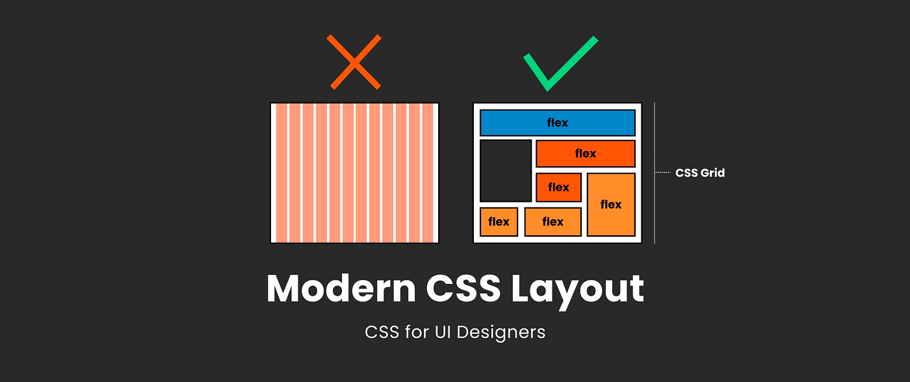
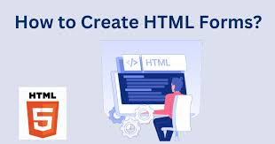
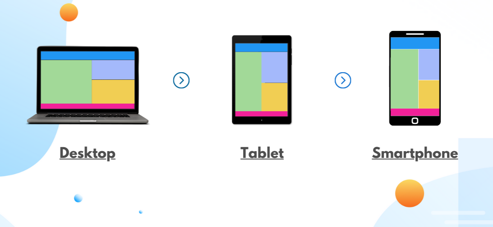

Understanding Semantic HTML
Semantic HTML refers to the use of HTML tags that have meaningful
names and convey the purpose of the content they contain. Unlike
generic tags such as <div> or <span>, semantic
elements like <header>, <article>, <section>,
and <footer> clearly define their role in the structure of a
webpage. This not only makes your code easier to read and maintain
but also improves accessibility for screen readers and enhances
search engine optimization (SEO).
Improved Accessibility
One key benefit of semantic HTML is improved accessibility.
Screen readers and other assistive devices rely on well-defined
HTML structures to help visually impaired users navigate a
webpage. For example, when a screen reader encounters a
<nav> tag, it knows that this section contains navigation
links, allowing users to skip directly to the main menu without
having to wade through unrelated content.
Better SEO
Search engines benefit from semantic HTML as well. Tags like
<h1> for the main heading and subsequent <h2> and
<h3> tags for subheadings create a clear hierarchy,
signaling the relative importance of each section. This
structure can improve your ranking in search engine results,
driving more organic traffic to your site.
Organizing Content with Logical Structure
Using semantic tags organizes your content in a meaningful way.
For instance, <header> introduces the top section of a
page, <main> contains the primary content, and
<footer> concludes the page. Similarly, <aside> is
perfect for supplementary content like sidebars or related
links, while <section> and <article> group related
content logically.
Collaboration and Maintainability
Semantic HTML also simplifies collaboration among developers.
Clean and descriptive code is easier to understand and modify. A
developer can immediately identify the purpose of a
<footer> or <section> tag without deciphering
generic <div> elements, speeding up development and
reducing errors.
Getting Started with Semantic HTML
Transitioning to semantic HTML can be done gradually. Start by
replacing non-descriptive tags like <div> with meaningful
alternatives. For example, use <nav> for menus,
<header> for page headings, and <article> for
self-contained pieces of content like blog posts. Over time,
this leads to cleaner, more effective code.
In conclusion, understanding and implementing semantic HTML is
an essential skill for web developers. It provides a foundation
for creating websites that are visually appealing, structurally
sound, and accessible to all users. By embracing semantic
principles, you ensure your website meets modern standards,
benefits search engines, and provides an inclusive experience
for all users.
Back to Top
CSS Flexbox: A Beginner's Guide

Flexbox is a powerful layout model in CSS that allows you to
create complex and responsive layouts with ease. It provides a
more efficient way to arrange items in a container, compared to
traditional layout methods. In this guide, we'll explore the
basics of Flexbox and how you can use it to build flexible and
adaptive designs.
What is Flexbox?
Flexbox, or the Flexible Box Layout, is a one-dimensional layout
model in CSS that allows you to align and distribute items
within a container. It is ideal for creating flexible layouts,
where the size and position of items are determined based on the
available space in the container.
The Flexbox Container
To create a flex container, you need to apply the
display: flex; property to a parent element. This
tells the browser that the child elements should follow the
Flexbox model. Here’s an example of a flex container:
/* Flex container */
.container {
display: flex;
}
Flexbox Properties
Flexbox offers several properties for both the container and the
items inside it. Let’s start by looking at the most common
properties.
1. justify-content
The justify-content property is used to align items
along the main axis (the direction of the flex container). It
can accept several values like flex-start,
center, space-between, and others.
Here’s an example of how you can use it:
/* Center items along the main axis */
.container {
display: flex;
justify-content: center;
}
2. align-items
The align-items property is used to align items
along the cross axis (perpendicular to the main axis). It can be
used to center, stretch, or align items at the start or end of
the container.
/* Align items to the center along the cross axis */
.container {
display: flex;
align-items: center;
}
Flexbox Item Properties
In addition to the properties for the flex container, Flexbox
also offers properties for the items inside the container. These
properties help you control the behavior and size of individual
items within the container.
1. flex-grow
The flex-grow property allows an item to grow and
take up any remaining space in the container. The higher the
value, the more space the item will take. For example:
/* Allow the item to grow */
.item {
flex-grow: 1;
}
2. flex-shrink
The flex-shrink property allows an item to shrink
when there’s not enough space in the container. The higher the
value, the more the item will shrink. For example:
/* Allow the item to shrink */
.item {
flex-shrink: 1;
}
Responsive Design with Flexbox
Flexbox is an excellent tool for creating responsive layouts. By
combining Flexbox with media queries, you can build layouts that
adjust based on the size of the viewport. For example, you can
create a layout that displays items in a row on large screens
and stacks them in a column on smaller screens:
/* Flex layout for large screens */
.container {
display: flex;
justify-content: space-between;
}
/* Stack items on small screens */
@media (max-width: 600px) {
.container {
flex-direction: column;
}
}
Conclusion
Flexbox is a powerful layout tool that can simplify the process
of creating responsive, flexible designs. By mastering the basic
properties like justify-content,
align-items, flex-grow, and
flex-shrink, you can easily control the alignment
and distribution of items in your layouts. When combined with
media queries, Flexbox enables you to create layouts that adapt
seamlessly to different screen sizes and devices.
Back to Top
HTML Forms: Tips for Better User Experience

Forms are a vital part of almost every website. Whether you’re
creating a contact form, a sign-up page, or an online survey, the
way users interact with forms can significantly impact the overall
user experience (UX). When implemented correctly, forms can be
intuitive, efficient, and help streamline user tasks. However,
poorly designed forms can frustrate users, causing them to abandon
the process entirely. In this article, we’ll explore essential
tips to enhance the user experience when designing HTML forms.
Keep Forms Simple and Focused
A key principle of good form design is simplicity. Users should
be able to complete forms with minimal effort and distraction.
The fewer fields you have, the better. For instance, ask for
only the most essential information, and try to avoid
unnecessary fields. If you must include additional fields,
consider making them optional or providing clear explanations of
why they're necessary. Keeping forms simple increases the
likelihood of users completing them.
Use Clear and Descriptive Labels
Clear labels are essential for guiding users through the form.
Instead of generic placeholders like "Name" or "Email," use more
specific descriptions, such as "Full Name" or "Primary Email
Address." Ensure that each label is placed close to the
corresponding field and visually distinguishable from the rest
of the content. This helps users understand exactly what
information is required, reducing confusion.
Group Related Fields Together
Organizing form fields logically is crucial for a smooth user
experience. Group related fields together in sections or use
multi-step forms if necessary. For example, if you're creating a
registration form, you can group "Personal Information,"
"Account Information," and "Payment Details" into separate
sections. This helps break up the form into manageable chunks
and makes it less overwhelming.
Provide Real-Time Validation
Form validation is an essential step in any form submission
process. Rather than waiting until after the user submits the
form to show error messages, consider using real-time
validation. As the user fills in the fields, provide immediate
feedback on whether the information is correct. For example, a
password field could notify the user if the password is too
short or if the email address format is incorrect. Real-time
validation not only improves user experience but also prevents
frustration by catching errors early.
Use Smart Defaults and Autofill
Whenever possible, use smart defaults to make the form-filling
process easier. For example, if a user has already filled out
certain information in previous forms or has an account,
pre-fill these fields with their existing data. If the form is
lengthy, allow the browser’s autofill feature to suggest answers
to common fields like address, name, or phone number. This saves
the user time and helps prevent data entry errors.
Make the Form Accessible
Accessibility is a crucial aspect of form design that should not
be overlooked. Ensure that your form is usable by all users,
including those with disabilities. This can be achieved by using
semantic HTML tags like <label> for form
fields, <fieldset> for grouping, and
<legend> for descriptions. Also, consider
implementing ARIA (Accessible Rich Internet Applications) roles
to improve accessibility for screen readers. By making your form
accessible, you create a more inclusive experience for everyone.
Test Your Forms Regularly
Regular testing is vital to ensuring your forms perform well and
provide a good user experience. Conduct usability testing to
identify pain points, such as confusing labels, hard-to-find
buttons, or overly complex fields. User feedback is
invaluable—ask for input from real users and use it to make
improvements. Additionally, perform cross-browser testing to
make sure your form works consistently across different browsers
and devices.
Conclusion
HTML forms are a powerful tool for collecting user data, but
they must be designed with care. By keeping forms simple, using
clear labels, grouping related fields, and providing real-time
validation, you can improve the overall user experience and
reduce the likelihood of form abandonment. Additionally, making
the form accessible and testing it regularly ensures that all
users can complete it with ease. Keep these tips in mind the
next time you design a form, and you’ll help ensure that your
users have a smooth, efficient experience.
Back to Top
Mastering CSS Selectors
CSS selectors are one of the most fundamental concepts in web
development. They are used to target HTML elements and apply
styles to them. Mastering CSS selectors not only makes it easier
to apply specific styles but also improves your ability to write
clean and efficient CSS code. In this article, we'll explore some
of the most commonly used CSS selectors and provide tips for
mastering them.
What Are CSS Selectors?
CSS selectors are patterns used to select and style HTML
elements. They can target elements based on various attributes,
such as their type, class, id, or other properties. For example,
you can target all <h1> tags in a document,
or you can target only elements with a specific class or ID. CSS
selectors help you apply specific styles to different elements
on your webpage.
Basic Selectors
The most basic and commonly used CSS selectors include:
<ul>
<li><element></li>
<li><class></li>
<li><id></li>
</ul>
These selectors allow you to target elements directly based on
their tag name, class, or ID. For instance,
<h1> will select all
<h1> tags, while .button targets
all elements with the class "button", and
#header selects the element with the ID "header".
Grouping Selectors
Grouping selectors allows you to apply the same styles to
multiple elements at once. This can help you reduce repetition
and keep your CSS clean. For example:
<ul>
<li><h1>, <h2>, <h3></li>
<li><.button>, <.link></li>
</ul>
In this case, you can apply the same style to multiple heading
tags like <h1>, <h2>, and
<h3>, or multiple classes like
.button and .link, by grouping them
with a comma.
Descendant and Child Selectors
The descendant selector allows you to target an element that is
nested within another element. For example, if you want to style
<p> tags inside a
<div> with a specific class, you can use the
following selector:
This selector will only target <p> tags that
are direct children of an element with the class "container". If
you want to target all <p> tags inside any
<div> (even nested), you would use the
descendant selector:
Understanding the difference between descendant and child
selectors helps you target elements more precisely.
Attribute Selectors
Attribute selectors allow you to target elements based on their
attributes. For example, if you want to select all
<a> tags with a specific href attribute, you
can use the following selector:
a[href="https://www.example.com"]
Attribute selectors are extremely powerful because they allow
you to target elements based on attributes such as
href, src, alt, and many
others.
Pseudo-Classes and Pseudo-Elements
Pseudo-classes and pseudo-elements are selectors that allow you
to target elements in a specific state or parts of elements. For
example, the :hover pseudo-class targets an element
when the user hovers over it, and the
::before pseudo-element lets you insert content
before an element’s actual content.
a:hover - applies styles when the user hovers over a link.
::before
- inserts content before an element.
Pseudo-classes and pseudo-elements help you create dynamic and
interactive designs, like changing the color of a button when
the user hovers over it or adding decorative content to your
webpage.
Combinators: Adjacent and General Sibling Selectors
Combinators allow you to select elements based on their
relationship with other elements. The adjacent sibling selector
(<element1 + element2>) targets the second
element if it immediately follows the first element, while the
general sibling selector (<element1 ~ element2>) targets the second element if it appears anywhere after the
first element.
h1 + p
- targets the first <p> element immediately after an <h1>
.
h1 ~ p
- targets any <p> elements that follow an <h1>.
These selectors help you create more complex relationships
between elements and apply styles based on their position in the
document.
Conclusion
Mastering CSS selectors is crucial for writing efficient and
maintainable stylesheets. By understanding the different types
of selectors—basic, grouping, descendant, child, attribute,
pseudo-classes, and combinators—you can target elements with
precision and flexibility. Whether you're styling a simple
webpage or building a complex layout, knowing how to use CSS
selectors effectively will help you create better user
experiences and more maintainable code.
Back to Top
Responsive Design with Media Queries

In today’s world, websites need to be accessible across a variety
of devices, from large desktop monitors to small mobile screens.
Responsive web design (RWD) is an approach that allows web pages
to adapt and look great on any screen size or device. One of the
most powerful tools for achieving responsive design is CSS media
queries. In this article, we’ll explore what media queries are,
how they work, and how you can use them to make your website
responsive.
What Are Media Queries?
Media queries are a feature of CSS that allow you to apply
different styles to your webpage depending on the
characteristics of the device or display. This includes
properties like screen width, height, orientation (landscape or
portrait), and resolution. Media queries enable your web page to
adjust its layout, font sizes, and other styling elements based
on the user’s device, improving the user experience across a
variety of devices.
The Syntax of Media Queries
A basic media query consists of the @media rule,
followed by a condition that specifies when the styles inside it
should be applied. For example, if you want to apply styles for
screens that are at least 768px wide (commonly tablets), you can
use the following syntax:
@media (min-width: 768px) {
/* Styles go here */
}
In this example, the styles inside the media query will only be
applied if the viewport width is 768px or wider. You can also
use other conditions like max-width, which applies
styles when the screen width is less than a certain value.
Common Media Query Breakpoints
While you can define your own breakpoints based on your design,
there are some common media query breakpoints used across the
web. These breakpoints are typically based on common device
sizes:
/* Mobile phones */
@media (max-width: 600px) { /* Styles for mobile devices */ }
/* Tablets */
@media (min-width: 601px) and (max-width: 1024px) { /* Styles for tablets */ }
/* Desktops */
@media (min-width: 1025px) { /* Styles for desktop screens */ }
These breakpoints ensure that your website looks good on mobile
phones, tablets, and desktops. However, remember that these are
just guidelines, and you should tailor your breakpoints to the
specific needs of your design.
Using Media Queries for Layout Adjustments
One of the most common uses of media queries is to adjust the
layout of your website for different screen sizes. For example,
you may want to display a single column layout on mobile
devices, but a multi-column layout on larger screens. You can
achieve this using media queries like so:
/* Single column for mobile */
@media (max-width: 600px) {
.container {
display: block;
}
}
/* Multi-column for larger screens */
@media (min-width: 601px) {
.container {
display: grid;
grid-template-columns: 1fr 1fr;
}
}
In this example, the layout switches from a single column to a
two-column grid layout depending on the viewport width. Media
queries allow you to design flexible layouts that adapt to
different screen sizes.
Changing Typography with Media Queries
Media queries can also be used to adjust typography for
different screen sizes. For example, you may want to increase
the font size for headings on larger screens and reduce it for
mobile devices. Here’s an example:
/* Large font size for desktops */
@media (min-width: 1025px) {
h1 {
font-size: 3rem;
}
}
/* Smaller font size for mobile */
@media (max-width: 600px) {
h1 {
font-size: 2rem;
}
}
This ensures that text remains legible and appropriately sized
regardless of the screen size, improving readability on all
devices.
Handling Orientation with Media Queries
Media queries also allow you to target devices based on their
orientation—whether the device is in portrait or landscape mode.
For example, you may want to apply different styles depending on
whether the user is holding their mobile device vertically or
horizontally:
/* Styles for portrait mode */
@media (orientation: portrait) {
/* Styles for portrait orientation */
}
/* Styles for landscape mode */
@media (orientation: landscape) {
/* Styles for landscape orientation */
}
By using the orientation media feature, you can
adjust your design to better fit the user's screen orientation,
creating a more polished and adaptable experience.
Combining Media Queries
You can also combine multiple conditions in a single media query
to apply styles only when multiple conditions are met. For
example, you can target devices that are both at least 600px
wide and in portrait mode:
@media (min-width: 600px) and (orientation: portrait) {
/* Styles for devices that are at least 600px wide and in portrait mode */
}
This allows you to create highly specific styling rules and
makes your design more flexible and adaptable to different
devices and situations.
Conclusion
Media queries are a powerful tool for making your website
responsive and ensuring it looks great on all devices. By using
media queries to adjust layouts, typography, and other elements
based on screen size, orientation, and other factors, you can
create a seamless user experience across desktop, tablet, and
mobile devices. With careful planning and the right breakpoints,
you can master responsive design and deliver a polished and
flexible web experience to all users.
Back to Top